| Vehículo | Cliente | Etapa | Subetapas | Tiempo en etapa | Total taller | Estado | Entrega |
|---|
Tiempo promedio por etapa
Solo cuenta tiempo de trabajo real. Overnight y pausas no suman.

| Vehículo | Cliente | Etapa | Subetapas | Tiempo en etapa | Total taller | Estado | Entrega |
|---|
Solo cuenta tiempo de trabajo real. Overnight y pausas no suman.
El cronómetro queda en 0:00:00 hasta que alguien pulse Iniciar.